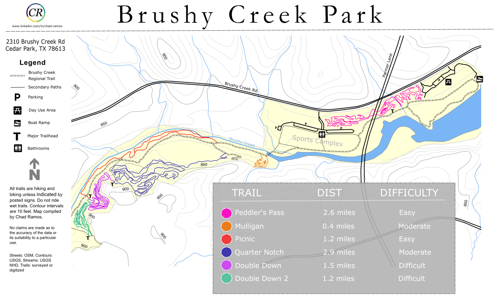
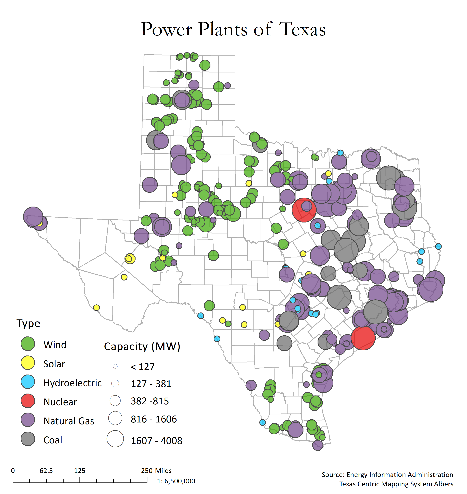
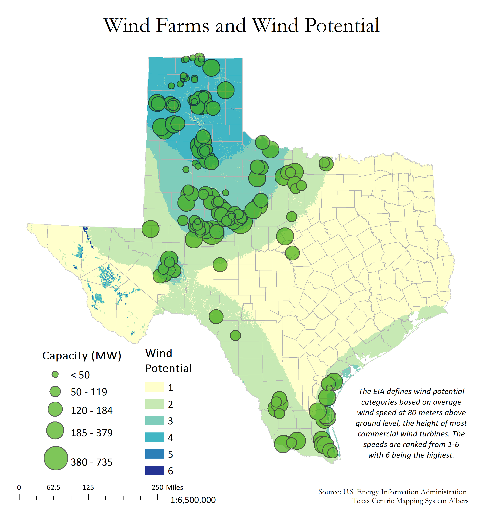
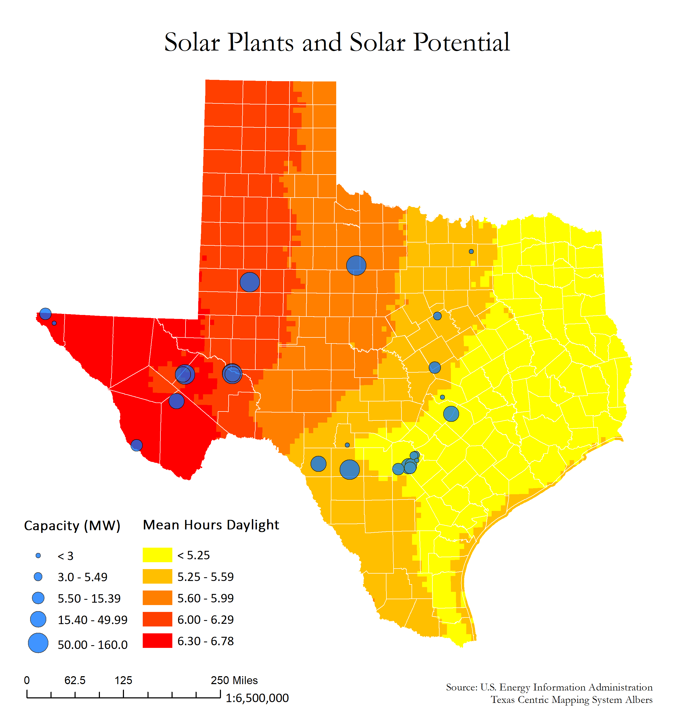
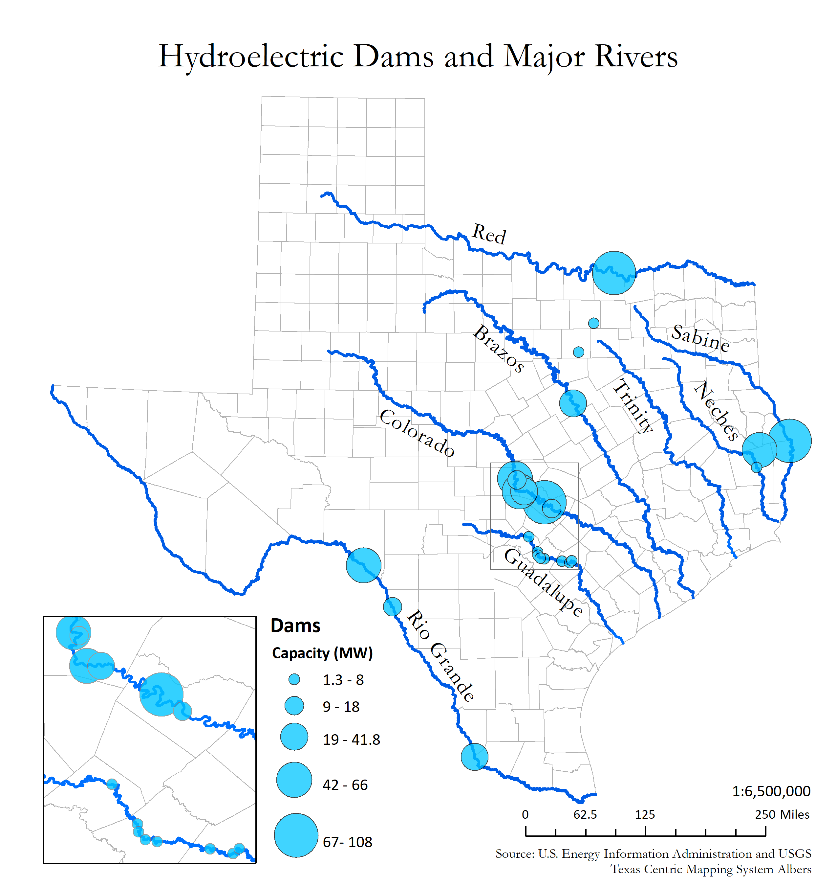
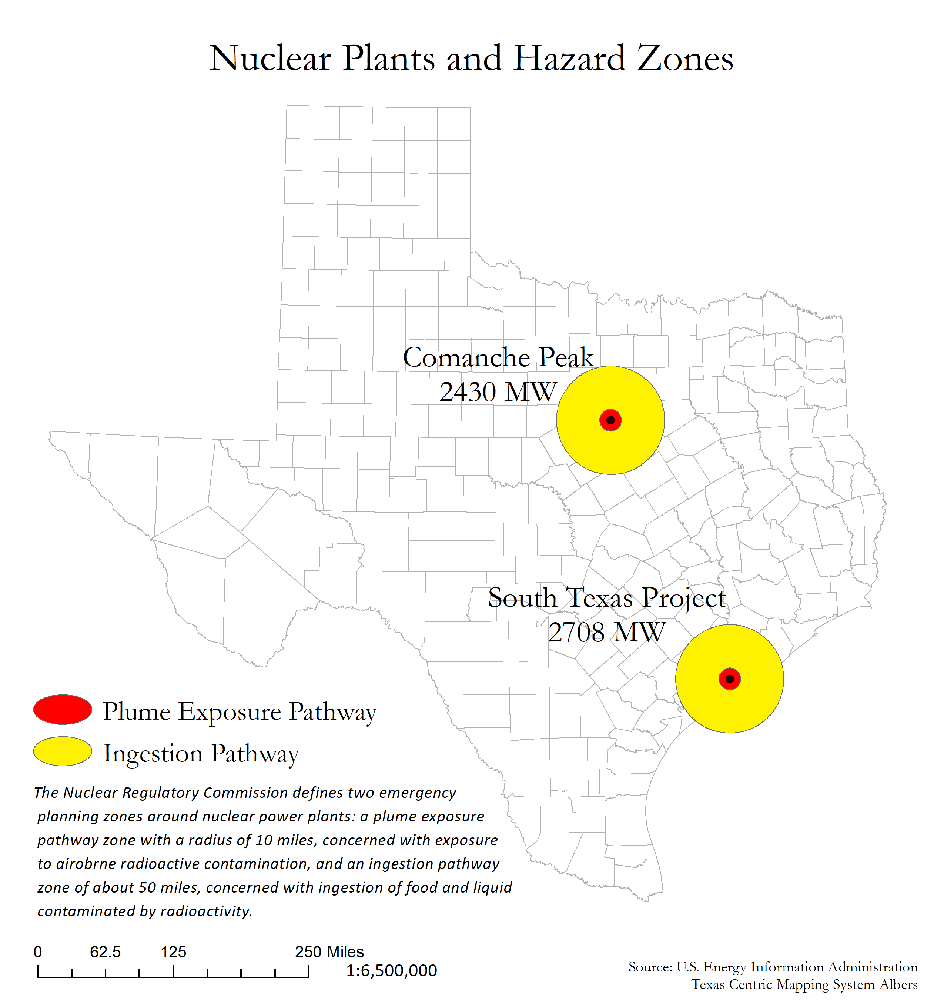
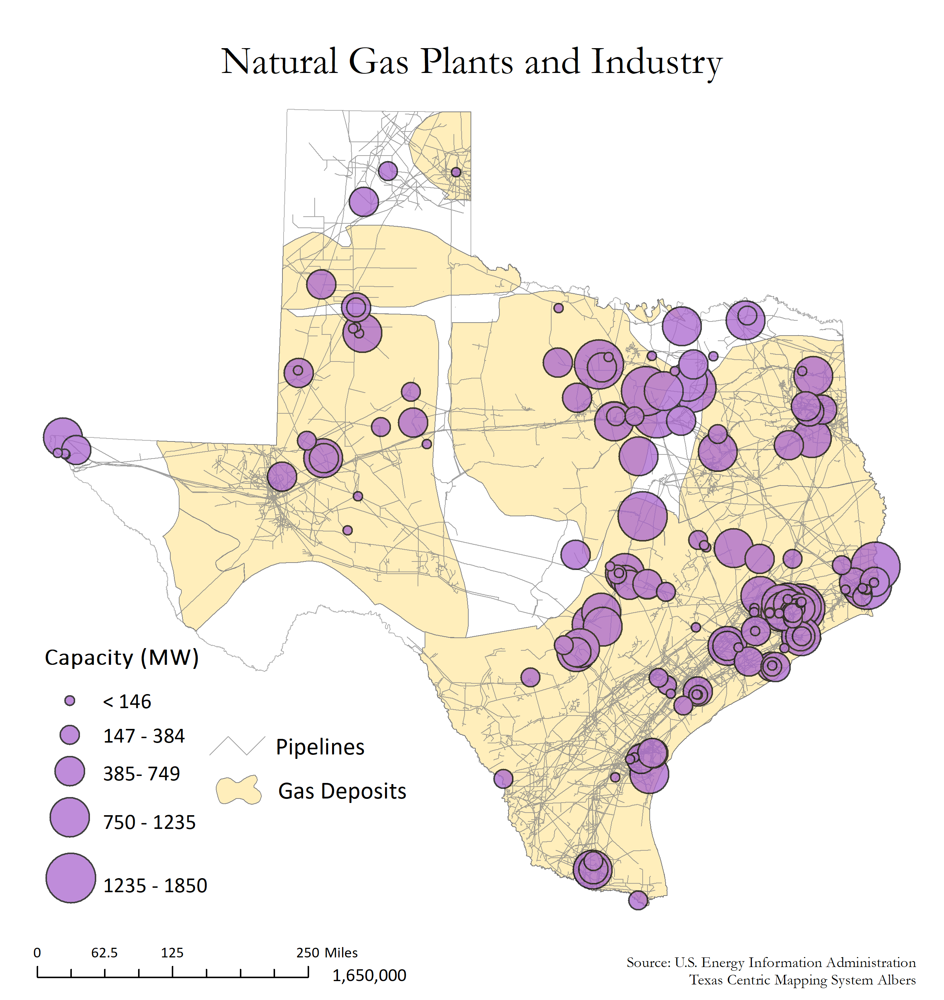
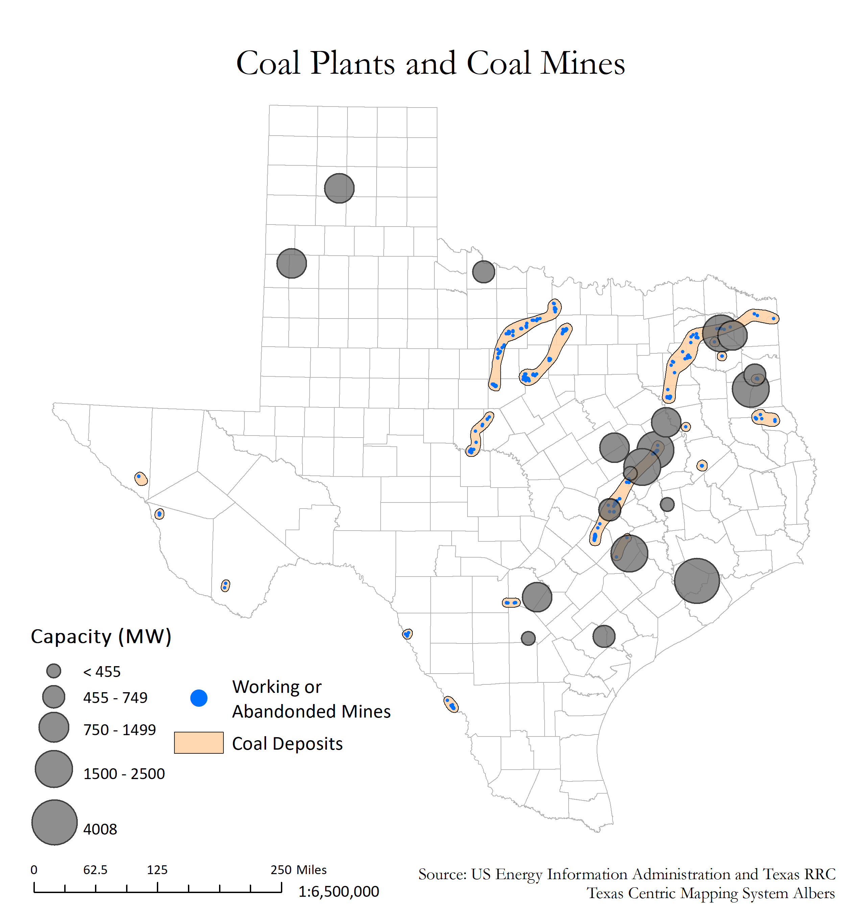

| |
This is my attempt at an art oriented cartography poster. The trail is from a mountian bike trip to Big Bend Ranch State Park. DEM is from TNRIS, Streams from USGS, and the trail was recorded on a Garmin Forerunner 235, uploaded to and then downladed as gpx from Strava. The contours, hillshade and poster were all created in ArcGIS PRO.

Brushy Creek Park in North Austin, styled after Texas State Park trails maps (becasue they're awesome). This project had been on my todo list for a while. I finally got the time to try it in the week I had between jobs.

A look at the daily movement of Austin's workforce from home postal code to work postal code, based on census data and the American Community Survey. The insights you can gain from census data through GIS are limitless. I created this for the poster display at the 2018 ATX GIS day conference.

A story map on paper? A nice poster? I'm not sure what to call this. It was my final project for my first cartography course. I love Big Bend, and at the time of the class I was trying to wrap my head around the complex geology of the park so I decided to roll it into my cartography project.

The next 7 maps are part of an atlas I created as the final project in Advanced Cartography, right before I graduated. Its also a web map in the web maps section. And I turned it into a poster for the poster contest at the 2018 Texas GIS Forum hosted by TNRIS.






 |
|